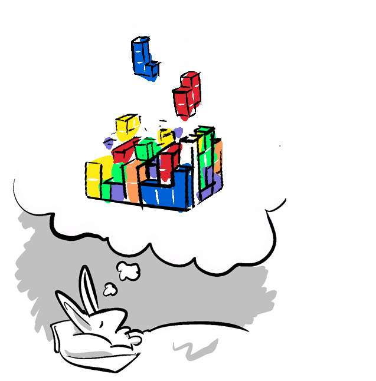
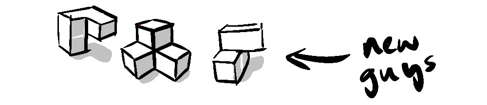

After viewing the Tetris movie, I found myself lying awake, thoughts racing. It's a common occurrence... this time I was fixated on how to create a three-dimensional version of Tetris.
Now, Tetris is notoriously difficult to express in three Dimensions. In two Dimensions the player can clearly see all the pieces. However, extend this into three dimensions and the pieces begin to obscure one another.
There have been various complicated solutions to what I'll call the obscuring problem, involving moving cameras, or partial transparency or even arranging the block in a cylinder, but in my opinion none have successfully cracked the complex simplicity of Tetris.
There is a big difference between complexity and complication. Complexity is often borne of simple beginnings. In the case of Tetris, the simple set of Tetrominoes - four joined blocks in each possible combination, fall into a box to make lines. What could be more simple?.
And yet it combines to make a complex puzzle which taps into a deep psychological need to tidy up, to fill gaps, to complete a thought and file it away neatly. This complexity is an emergent property of a simple formula, it is non-zero-sum in that it gives more than it costs.
The complicated solutions to 3D Tetris add a dimension, but necessitate a load of cumbersome new controls to work around the problem they introduce - the obscuring problem.

So, lying awake in bed, I thought it might be possible to eliminate the the obscuring problem by using a symbolic 3D environment, where objects would reduce in size as they recede in depth, but would not converge on a vanishing point, this way if you used rings to represent blocks, you could see through the rings to other rings in the background, giving you access to all the information in the space. Watch out for the new tetrominoes too - three dimensions introduces some curly combinations.

This version of the game is playable only on desktop and is really a proof of concept. I'm now finished a mobile version too if you'd prefer. (Note to Tetris' copyright lawyers - I don't intend to develop the game further than this, or monetize it - please don't sue me).
If you enjoyed playing, share the love on... Facebook Twitter LinkedIn
Now, translating ideas into code is a game in itself and my sleeplessness involved orienting falling code blocks. Ironically, this sleepless visualisation is one symptom of a condition called "The Tetris Effect" referring to people who claimed that after playing Tetris, they would find themselves picturing falling blocks as they drifted off to sleep, think Beth Harman in "The Queen's Gambit" with her upside down chess board. The Tetris Effect can also invade people's waking lives with intrusive thoughts that interpret the real world through the lens of this particular cognitive pattern.
It turns out that this phenomenon is a natural part of learning, and that the imagery is a separate form of memory. Harvard psychiatry professor Robert Stickgold has shown in his research that people with anterograde amnesia who were unable to form declarative memories reported experiencing the Tetris Effect even though they couldn't remember playing the game.
The way I make sense of it is like this - if you are building new neural pathways in your mind, a lot of that is done during deep and REM sleep through subconscious processes, but sometimes your thoughts are not ready to be handed off to the subconscious, so your conscious mind frantically tries to order them appropriately first.
This is something Stickgold calls hypnagogic dreaming. I think this is something the brain is doing a lot of the time, trying to find clean and clear certainty rather than messy, unresolved uncertainty - It's this very instinct to which the game of Tetris appeals, and is what makes it so addictive. Tetris is just a simplified environment for doing what we're constantly trying to do, make order out of chaos.
Game environments, to the brain, are no different to physical environments, they simply have new variables and relationships. Mapping those relationships is something we do naturally. By creating a version of 3D Tetris that gives your mind all the information it needs, but not in a naturalistic representation, I'm hoping players will be able to better form a map in their mind of the terrain, and be transported to another world. That is of course after a few nights of restless hypnagogic dreams.
As for my sleeplessness, it was short-lived once I resolved the puzzle I was puzzling over... making the game. Let me know what you think, or post your high score in the comments.